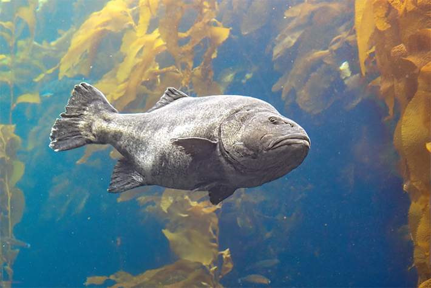

The giant sea bass lives up to its name—the bulky fish can stretch up to nearly 9 feet long and weigh more than 500 pounds. It has a pretty massive fan club, too: The beloved bony fish enchants divers along the coasts of California and Mexico, who love to photograph it. Now, researchers have harnessed the giant sea bass’ celebrity status for science.
Researchers have tallied the first direct population estimate of the beloved species, thanks to more than 1,600 photographs—a “Facebook of fish”—taken by recreational divers and fishers between 2015 and 2022. This work also adds to recent evidence that the big fish’s population is growing once again, a welcome sign after decades of conservation efforts: The giant sea bass was listed as critically endangered in 1996. Fisheries off California’s coast began encountering major declines in the species as early as the 1930s, and the state banned giant sea bass fishing in 1982.
Giant sea bass have distinctive spots that can serve as “fingerprints,” enabling algorithms to identify individual fish from the Pacific paparazzi photos—a method previously used to study other marine creatures, including whale sharks and sand tiger sharks. This technique has been shown to identify individual fish with up to 95 percent accuracy, says study author Andrew Pettit, a marine biologist who conducted the research as a master’s student at the University of California, Santa Barbara.

KING OF THE FOREST: Giant sea bass are apex predators in the kelp forests off the coast of California, and help to keep these vital ecosystems thrumming. Photo by Barbara Ash / Shutterstock.
After the scientists crunched the data, they determined that some 1,221 adult individual giant sea bass circulated off of Southern California between 2015 and 2022, as reported in the journal Marine Ecology Progress Series. Earlier estimates had relied on data from fisheries, which report accidental catches of the species, and genetic analyses.
“The population estimate is responsible and actually good news because genetic evidence had most recently suggested a number nearly half of that,” says Larry Allen, a marine biologist and emeritus professor at California State University, Northridge, who consulted on the research but didn’t participate directly in the study. “The number one question for many of us studying giant sea bass over the past two decades has been, ‘Just how many are there now?’” In 2015, Allen’s paper suggested that fewer than 500 giant sea bass lived off the Pacific coast of Southern California and northern Mexico.
Large fish like the giant sea bass are particularly vulnerable to forces like climate change and overfishing because they grow relatively slowly and reach sexual maturity late in life. That means there are many more opportunities for the fish to die before they mate and have babies. Yet this species also plays a crucial role at the top of the food chain: They are apex predators of both fish and invertebrates in kelp forests and rocky reefs. They keep prey in check, and act as “croppers,” preventing any one species from becoming too abundant and disrupting the ecosystem balance. The fish also hosts tiny parasitic crustaceans, which then become dinner for the Señorita fish, a type of wrasse that acts as a "cleaner" fish for the giant sea bass.
Giant sea bass have distinctive spots that can serve as “fingerprints.”
The recent photographic analysis provided data not only about the giant sea bass population’s numbers, but also hints at this particular population’s relative isolation. In the waters off the coast of Southern California, fewer than 5 percent of the individuals spotted multiple times were documented traveling long distances. This aligns with genetic analysis studies: Scientists have observed low genetic diversity among giant sea bass along the Southern California coast, which could make it tougher for these fish to adapt to a changing marine environment.
The photo analysis method is a win-win: It’s less invasive than tagging fish and engages the giant sea bass-loving community, says study author Molly Morse, a marine scientist at the University of California, Santa Barbara.
“They’re such a charismatic species—people spend a ton of money to dive and have the opportunity to meet one,” Pettit says. “We realized that people post all these photos of giant sea bass, so we can just collect this data and analyze it.”
But relying on diver and fisher photos only paints part of the picture, Ramírez-Valdez says. This biases the data toward fish who live in these particular waters during the summer months and to geographic spots that divers tend to frequent, he says.
To get a more precise population count, Morse says she and her colleagues plan to track giant sea bass off California’s coast with tags that send real-time data to a satellite system. The researchers also hope to engage with scientists and divers in Mexico. In 2021, Ramírez-Valdez and his colleagues suggested that the majority of the species actually lives off the Pacific coast in Mexico, and that conservation efforts have overlooked populations just over the border—where they seem to be flourishing.
Either way, it seems this celebrity fish might still have a big future. 
Lead photo by Douglas Klug